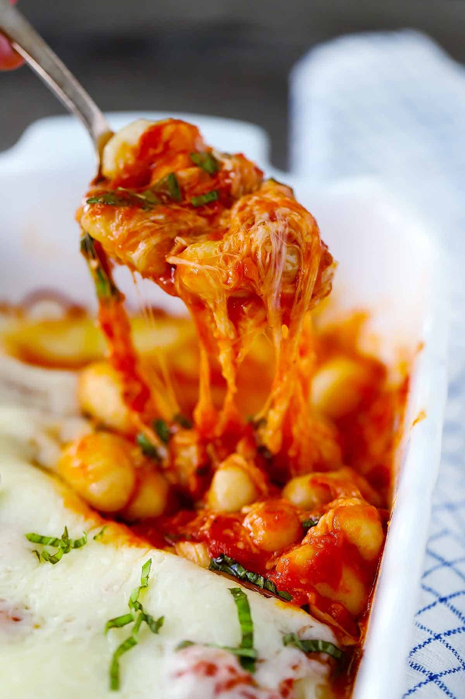

Baked Gnocchi with Marinara, Basil, and Mozzarella

Description
This ultra-cheesy baked gnocchi recipe takes only 20 minutes to make with only
FOUR ingredients! It will be your new favorite weeknight dinner that the whole family will
devour.
Ingredients
Steps
-
Boil the gnocchi in salted water. This is similar to cooking pasta, but it takes WAY less
time- only about 2-3 minutes!
-
Transfer the cooked gnocchi to a baking dish, casserole pan, or oven safe skillet.
-
Top with fresh basil. I like to cut my basil
chiffonade, but you can just give it a rough
chop or even leave the leaves whole if you want.
-
Top with marinara sauce. I recommend a high quality store-bought brand, such as Rao’s, or
homemade marinara sauce.
-
Top with LOTS of mozzarella cheese. I alternate between using grated whole milk mozzarella
cheese, and using fresh mozzarella cheese. You can use either. Just make sure it’s evenly distributed across
all the gnocchi.
-
Bake! It only takes about 15 minutes, since the gnocchi is already warm, just until the cheese
is melty. Cheesy gnocchi goodness awaits.